Ordres en acció amb Tale-Bot
🏷️ Seqüències i instruccions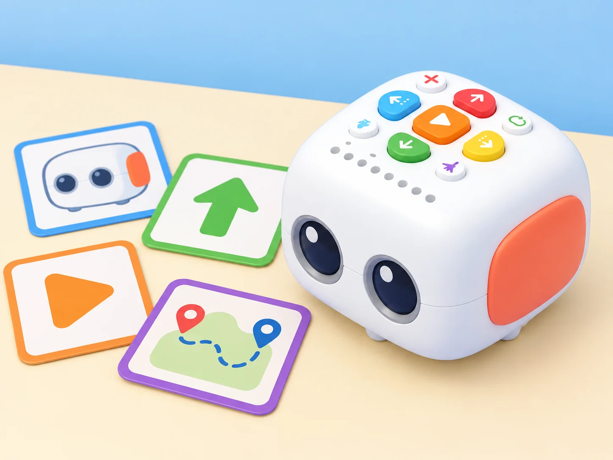
🌱 Situació, repte i intenció
repartiu i alterneu els rols de programar i comprovar, i ajusteu l’objectiu si cal perquè l’error es puga revisar sense pressa. Abans de cada repte, carregueu Tale-Bot, comproveu la versió del robot i prepareu una taula o terra nets i plans. Les targetes i graelles d’aquesta adaptació són pròpies: només useu adhesius OID o funcions de l’Activity Box quan el centre en tinga i els haja verificat; un mapa imprés no activa per si mateix respostes del robot.
🎯 Aprenentatges i vocabulari
- Identificar ordres de moviment i combinar-les en seqüències amb inici i final.
- Predir la posició final del Tale-Bot i comprovar-la en una quadrícula pròpia.
- Localitzar una ordre de més, de menys o en direcció incorrecta i depurar-la.
- Explicar una ruta perquè una altra persona la puga reproduir amb targetes o amb el robot.
🧰 Materials i preparació
Tale-Bot de la dotació, targetes de fletxes impreses pel centre, graella, gots de paper, peces planes i cinta de pintor. Gravació de veu, indicadors, botó de repetició i accessoris varien segons el model: comproveu-los abans. Si una funció no està disponible, representeu-la amb una targeta o una ordre oral; no s’atribueix al robot una capacitat absent.
📅 Seqüència didàctica
Hola, Tale-Bot i al repte
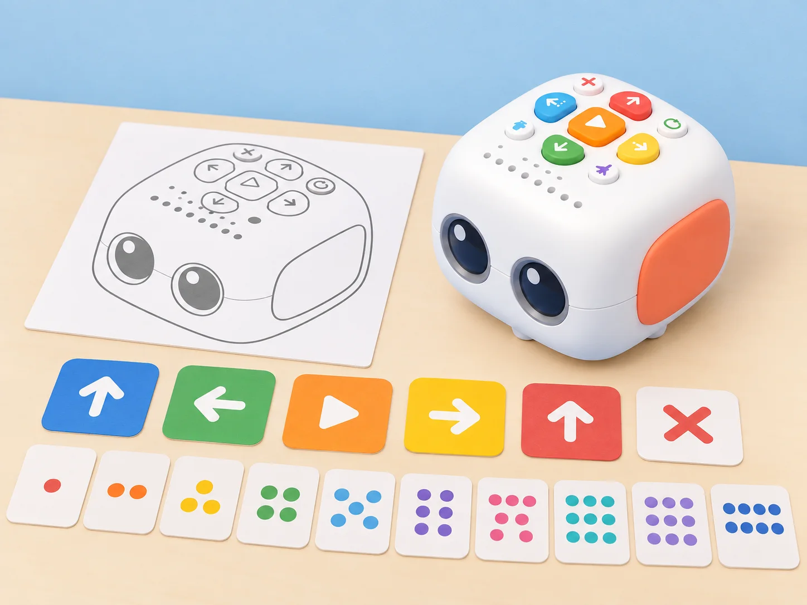
Objectiu: identificar les parts i els botons, entendre què és una ordre i un programa, i comprovar visualment la seqüència introduïda.
Preparació: Tale-Bot Pro, esquema propi de les parts, targetes pròpies amb els botons de moviment, Play i esborrat, targetes de nombre de l’1 al 10 i una graella breu. Els accessoris s’exploren només si formen part del kit del centre.
Fase 1 · Activem i prediem
Mireu el robot apagat i l’esquema propi. Assenyaleu cos, rodes, botons, llums i interruptor; distingiu les ordres que pot executar d’una decisió humana. Acordeu una norma de cura i practiqueu l’encesa i l’apagada amb supervisió.
Fase 2 · Explorem i construïm
Proveu els botons de moviment, gir, Play, dansa, repetició, gravació i esborrat que tinga el model. Comproveu que una pulsació curta d’esborrat elimina una ordre i que mantindre’l premut esborra la seqüència completa; anoteu les funcions que la unitat del centre no incorpora.
Fase 3 · Expliquem i registrem
Trieu una targeta de l’1 al 10 i introduïu exactament eixe nombre d’ordres, per exemple girs i avanços en una quadrícula. Abans de prémer Play, una altra persona compta les targetes i les ordres enregistrades.
Fase 4 · Apliquem i millorem
Si els recomptes no coincideixen, esborreu i corregiu només el tram necessari. Observeu els colors dels indicadors de codificació, executeu el programa i compareu l’acció amb la predicció.
Fase 5 · Comprovem i reflexionem
Avança, avança
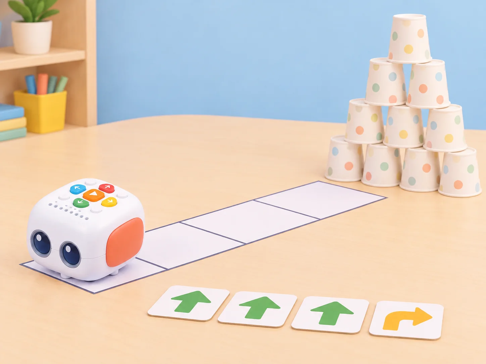
Fase 1 · Activem i prediem
Construïu una torre de deu gots buits i lleugers. Predigueu quantes ordres cap avant necessita Tale-Bot per arribar-hi des d’una línia d’inici marcada.
Fase 2 · Explorem i construïm
Representeu la seqüència amb targetes i trieu un nombre d’ordres per al primer intent. Manteniu lliure la trajectòria i no useu objectes pesants o fràgils.
Fase 3 · Expliquem i registrem
Anoteu el nombre d’ordres i quants gots han caigut. Compareu el resultat amb la predicció i descriviu el desplaçament observat.
Fase 4 · Apliquem i millorem
Recol·loqueu els gots i reinicieu Tale-Bot des de la mateixa línia per fer una prova comparable. Si el kit té un accessori d’empenta compatible, proveu-lo com a extensió i registreu el canvi; no se’n pressuposa la disponibilitat.
Fase 5 · Comprovem i reflexionem
Quants avanços
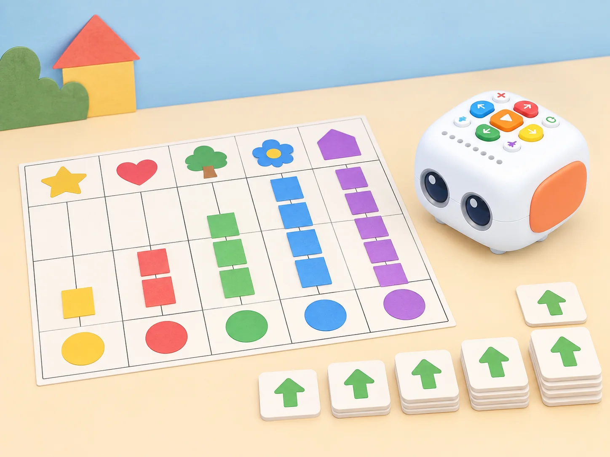
Fase 1 · Activem i prediem
Dibuixeu una graella pròpia amb cinc inicis al costat inferior (A1–E1) i una meta davant de cadascun. Predigueu quina ruta necessita més avanços.
Fase 2 · Explorem i construïm
Situeu Tale-Bot orientat cap a la meta i compteu quantes ordres «avant» el separen. Registreu la seqüència amb targetes abans de programar.
Fase 3 · Expliquem i registrem
Observeu els indicadors verds per comprovar el recompte i anoteu inici, orientació, nombre d’ordres i meta de cada ruta.
Fase 4 · Apliquem i millorem
Executeu les cinc rutes i compareu les distàncies en ordres. Si un trajecte no correspon, reviseu l’orientació abans de canviar-ne el recompte.
Fase 5 · Comprovem i reflexionem
Codi de l’aula I
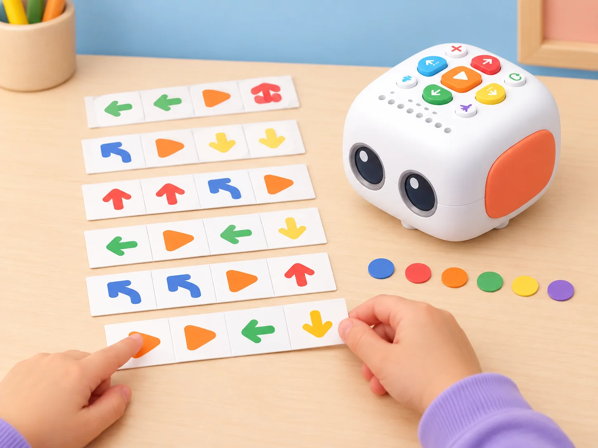
Fase 1 · Activem i prediem
Expliqueu que un programa és un conjunt d’instruccions en un ordre concret. Observeu sis programes visuals propis i predigueu què farà Tale-Bot abans de prémer Play.
Fase 2 · Explorem i construïm
Una parella introdueix les ordres de cada targeta en el mateix ordre. Comproveu visualment els indicadors de colors abans d’executar.
Fase 3 · Expliquem i registrem
Pinteu en una targeta pròpia els colors dels indicadors que representen cada programa. Anoteu les accions que espereu després de cada seqüència.
Fase 4 · Apliquem i millorem
Una altra parella rep la targeta de colors sense veure el robot i reprodueix la seqüència. Compareu la interpretació amb el programa original i corregiu qualsevol ordre ambigua.
Fase 5 · Comprovem i reflexionem
Ens coneixem
Fase 1 · Activem i prediem
Col·loqueu Tale-Bot Pro, un personatge i dues parades de carlotes de paper en un recorregut curt d’hort escolar. Trieu una salutació breu, sense dades personals, i predigueu les ordres necessàries per arribar primer al personatge i després a cada parada. Acordeu quina frase es gravarà una sola vegada i com es reutilitzarà.
Fase 2 · Explorem i construïm
Manteniu premut el botó de gravació mentre parleu i deixeu-lo anar en acabar; l’enregistrament pot durar com a màxim 30 segons. El Tale-Bot reprodueix l’àudio en acabar perquè l’equip el comprove. Per reutilitzar l’últim missatge, feu una pulsació de menys d’un segon en el botó de gravació. No confongueu aquest gest amb el botó Clear: la pulsació de més d’un segon correspon a esborrar tota la seqüència.
Fase 3 · Expliquem i registrem
Primer feu la tasca de salutació: programeu l’arribada a un personatge de joguet o de paper i inseriu una pulsació curta del botó de gravació perquè reproduïsca el missatge que acabeu de provar. Després, sense tornar a gravar, programeu l’arribada a dues parades de carlota i inseriu una pulsació curta en cada parada per reutilitzar el mateix àudio. Marqueu en el registre les tres ordres de reproducció i distingiu-les de l’enregistrament inicial.
Com a alternativa accessible, l’equip pot fer servir una salutació no gravada amb pictograma o veu en directe.
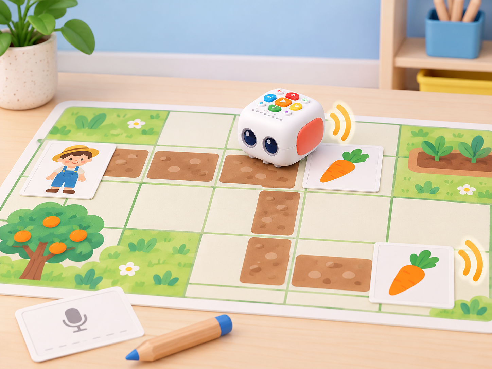
Fase 4 · Apliquem i millorem
Executeu primer la ruta al personatge i comproveu la salutació; després, proveu la ruta a les dues parades. El mateix àudio ha de sonar una vegada en cada punt i Tale-Bot ha d’acabar en la casella prevista. Si falla el trajecte o es reprodueix en un lloc inadequat, canvieu una sola ordre i repetiu la prova. El robot no reconeix la targeta, la carlota ni la salutació: totes les accions depenen de la seqüència programada.
Fase 5 · Comprovem i reflexionem
Taller de dansa
Fase 1 · Activem i prediem
Poseu Tale-Bot i una targeta d’escenari en la mateixa línia. Predigueu el tram d’anada i el de tornada perquè el robot acabe al punt d’inici. Distingiu la ruta, que sí que programeu, de la dansa, que s’escull aleatòriament entre sis moviments predefinits.
Fase 2 · Explorem i construïm
Planifiqueu les ordres cap avant i arrere i afegiu el botó de dansa aleatòria al punt triat. Tale-Bot Pro incorpora sis danses predefinides i cada activació en reprodueix una a l’atzar; no permet triar ni editar la coreografia.
Fase 3 · Expliquem i registrem
Dibuixeu la ruta i registreu la distància de cada tram en ordres. Indiqueu quina ordre activa la dansa i anoteu que el resultat no és determinista.
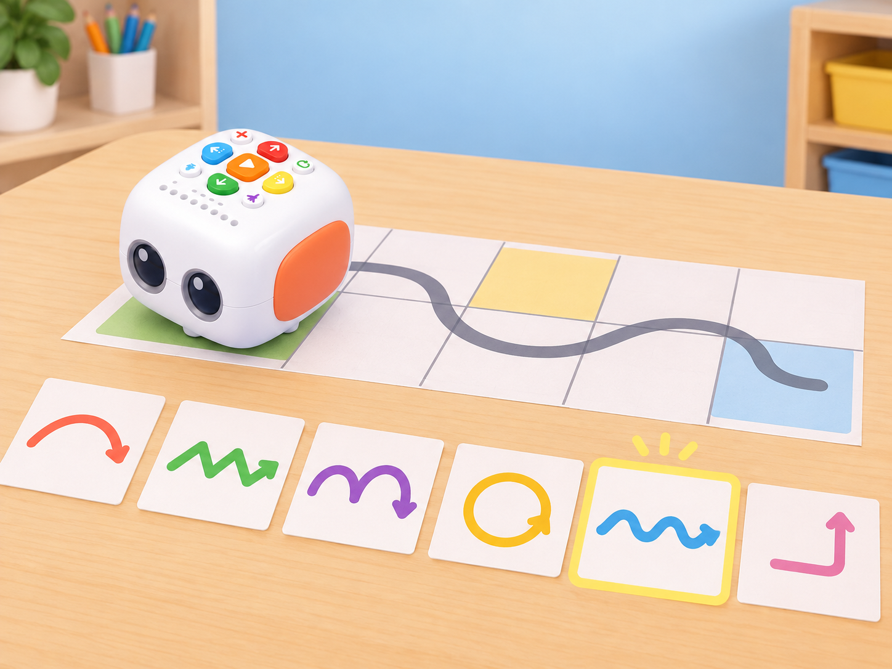
Fase 4 · Apliquem i millorem
Proveu quatre disposicions de distància diferent i reinicieu sempre des de la mateixa marca. Registreu la ruta i la dansa observada en cada intent; no exigiu que les danses siguen diferents. Ajusteu les ordres si el robot no torna a l’inici.
Fase 5 · Comprovem i reflexionem
Gir a esquerra o dreta
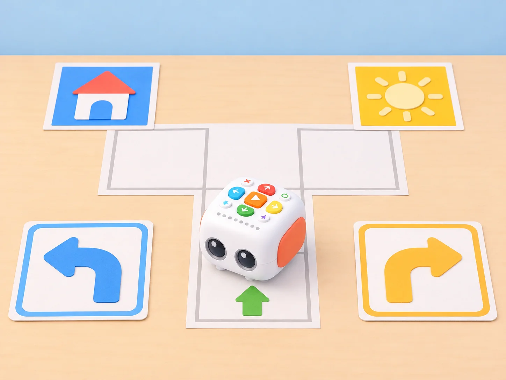
Fase 1 · Activem i prediem
Prepareu quatre parelles de targetes d’antònims i mapes propis. Abans de donar una ordre, una persona assenyala esquerra o dreta des del punt de vista del robot.
Fase 2 · Explorem i construïm
Completeu cada programa amb «gira a l’esquerra» o «gira a la dreta» perquè Tale-Bot arribe a la targeta indicada. Comproveu l’orientació inicial.
Fase 3 · Expliquem i registrem
Anoteu la targeta objectiu, el gir triat i la posició final prevista. Una altra persona comprova que la instrucció descriu la direcció des del robot.
Fase 4 · Apliquem i millorem
Executeu les quatre rutes. Si hi ha desviació, canvieu només el gir que la causa i repetiu la prova.
Fase 5 · Comprovem i reflexionem
Codi de l’aula II
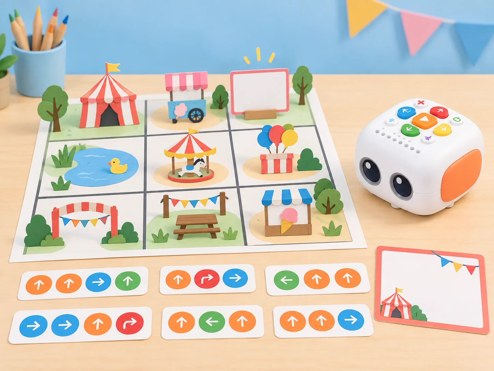
Fase 1 · Activem i prediem
Llegiu sis programes visuals propis i predigueu el moviment, els girs i el missatge que espereu en cada cas.
Fase 2 · Explorem i construïm
Introduïu les ordres exactes de cada targeta i creeu missatges neutres sobre una fira o una biblioteca, en lloc de copiar les frases alimentàries del fabricant.
Fase 3 · Expliquem i registrem
Pinteu els colors dels indicadors en una targeta de programació per a un dels casos. Anoteu el resultat esperat abans de prémer Play.
Fase 4 · Apliquem i millorem
Executeu els sis programes i compareu moviment, girs i missatge amb la targeta model. Feu que un altre equip interprete el codi de colors sense veure el robot.
Fase 5 · Comprovem i reflexionem
Collim fruita de temporada
Fase 1 · Activem i prediem
Trieu una fruita de temporada per al mapa propi i predigueu quina ruta arriba des de Tale-Bot fins a la casella. Si incloeu una dansa de celebració, tingueu present que el robot en tria una a l’atzar entre sis opcions predefinides.
Fase 2 · Explorem i construïm
Dibuixeu el recorregut amb retolador esborrable, traduïu-lo a targetes d’ordre i marqueu el punt d’inici.
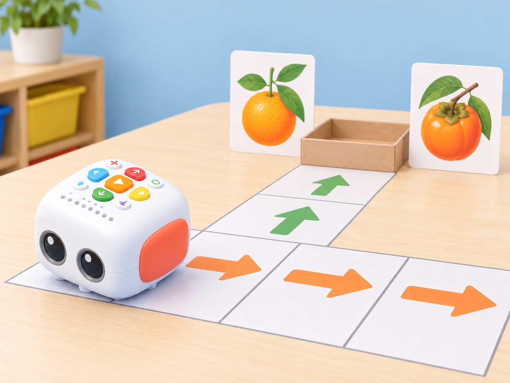
Fase 3 · Expliquem i registrem
Anoteu la seqüència i decidiu si activareu el botó de dansa aleatòria en arribar; l’alumnat no selecciona una coreografia concreta. Una frase gravada és opcional i requereix consentiment i funció compatible.
Fase 4 · Apliquem i millorem
Programeu el robot per arribar a la fruita i activar la dansa aleatòria. Esborreu la ruta abans que un altre equip prove una trajectòria diferent; no canvieu la coreografia, que forma part de les sis opcions predefinides.
Fase 5 · Comprovem i reflexionem
Guardes del parc I
Fase 1 · Activem i prediem
Col·loqueu Tale-Bot i una joguina lleugera en una superfície plana. Predigueu quines ordres permetran passar al voltant de l’objecte sense tocar-lo.
Fase 2 · Explorem i construïm
Dibuixeu el camí i representeu les instruccions amb targetes. Comproveu que el trajecte queda lluny de la vora i que l’objecte no és fràgil ni rígid.
Fase 3 · Expliquem i registrem
Anoteu les ordres de cada tram al voltant de l’objecte i indiqueu el punt on el robot ha de reprendre la direcció inicial.
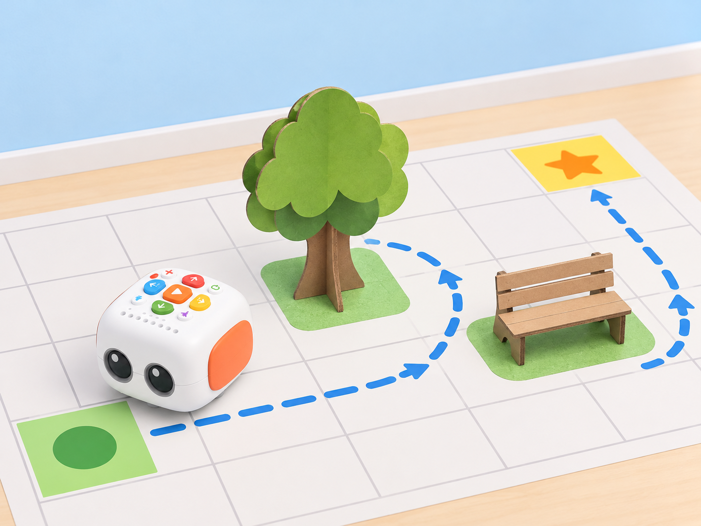
Fase 4 · Apliquem i millorem
Proveu el programa amb un objecte. Com a repte, separeu dos objectes i dissenyeu una sola seqüència que passe al voltant de tots dos sense tocar-los.
Fase 5 · Comprovem i reflexionem
🧪 Evidències i avaluació
Recolliu predicció, seqüència de targetes, recorregut observat i correcció d’un error. Accepteu resposta oral, gestual, pictogràfica o amb codi. Roten els papers de planificador, operador i observador; cap infant queda associat a un rol fix.
♿ Participació, accessibilitat i seguretat
Comenceu amb poques ordres i una quadrícula clara; oferiu fletxes grans, fitxes tàctils o una ruta de paper abans de prémer els botons del robot. La participació pot ser assenyalar, anticipar, ordenar targetes, comprovar o narrar. Manteniu les mans fora de les rodes quan el Tale-Bot estiga en moviment i pareu-lo abans de canviar-ne el recorregut.
🔗 Referents i adaptació
Adapta les deu targetes de categoria A —Hello, Tale-Bot, Forward, Forward, How Many “Forwards”?, Tale-Bot Classroom I, Nice to Meet You!, Tale-Bot Loves Dancing, Turn Left or Turn Right?, Tale-Bot Classroom II, Fruit Picking i Tale-Bot Guard I— de les Activity Cards per a Tale-Bot Pro. L’activitat A-1 també es basa en la primera lliçó pública del currículum, «Hola, robot Matata», que proposa conéixer l’estructura i els botons, encendre i apagar el robot, despertar curiositat i practicar-ne la cura;
la pàgina enumera model de paper, robot, accessoris de muntatge i deu gots de paper entre els materials. La fitxa pròpia explicita aquests objectius i transforma els gots en una ruta de predicció i prova. El PDF i la presentació de la lliçó no s’han pogut llegir, de manera que no afirmem reproduir-ne el guió ni la construcció exacta. Les nostres targetes, model i mapa són propis; no reutilitzem materials gràfics del fabricant.